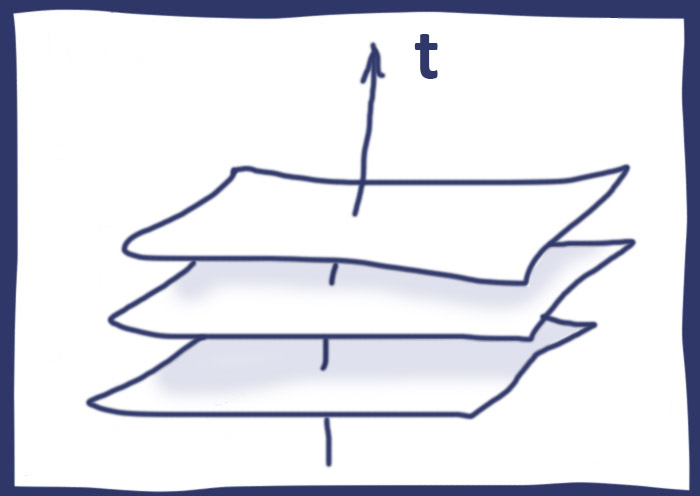

Inhomogeneous cosmological models
Accelerated expansion from non-standard fluid components and anisotropies.
Can the universe appear accelerated without dark energy, once we relax homogeneity and geodesic flow assumptions?
The discovery that the universe is expanding at an accelerating rate, a finding that led to the idea of dark energy, remains one of the deepest mysteries in modern cosmology.
Together with my colleagues, I work to understand this question using Stephani-class cosmologies, which are smooth, non-rotating universes filled with a perfect fluid whose pressure changes from place to place. In these inhomogeneous models, the observed cosmological acceleration can be reproduced without the need for dark energy.
In our work, we treat these models as diagnostic labs rather than literal global cosmologies. We develop results such as a closed form redshift-magnitude relation, and we continue to test these models by comparing them with observations of supernovae, baryon acoustic oscillations, and structure growth, to see which versions remain consistent with the universe we observe.